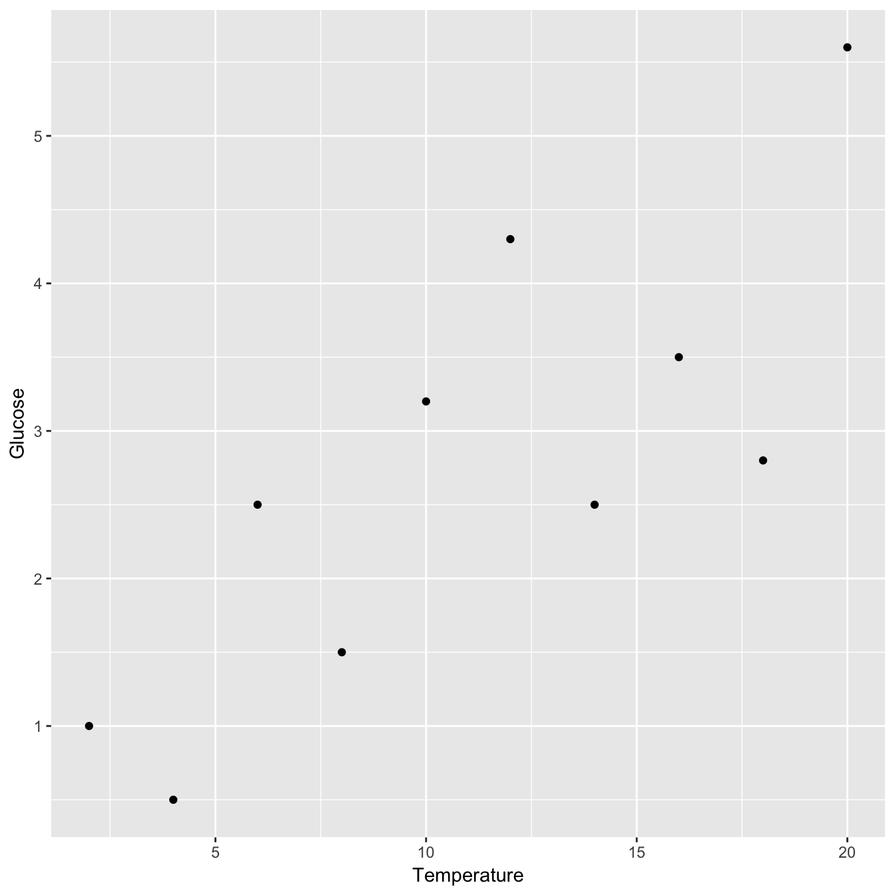
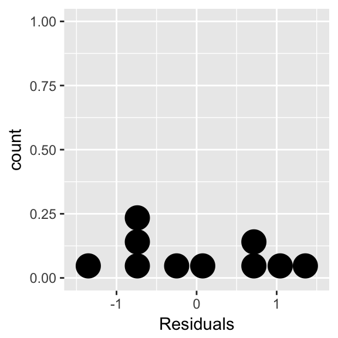
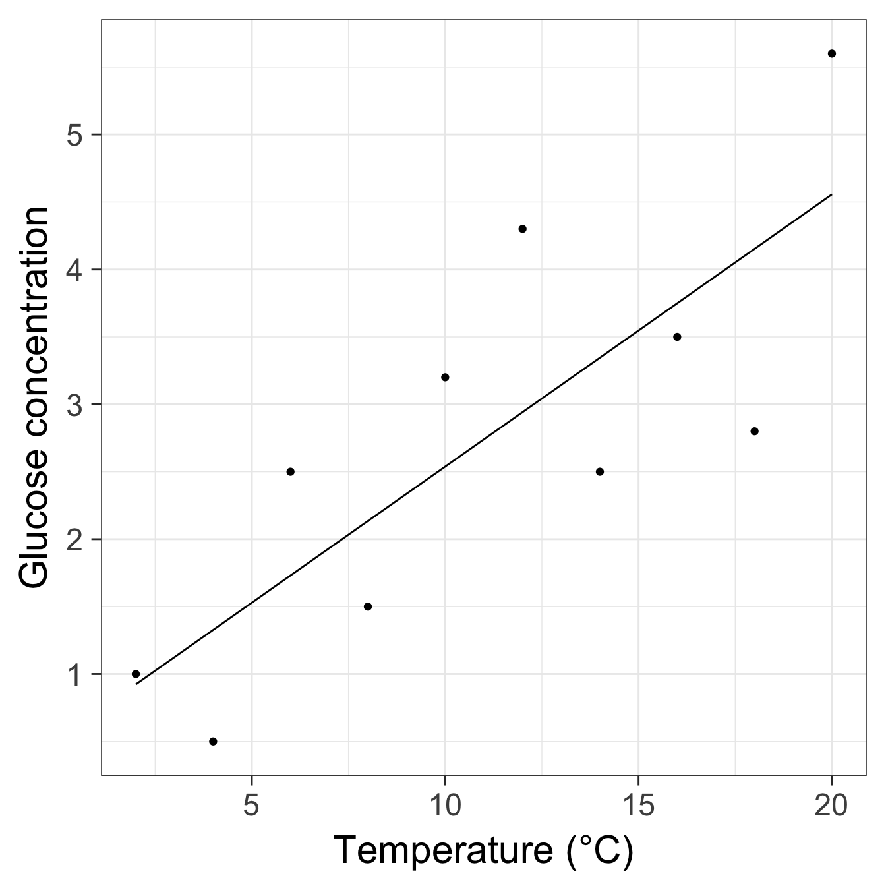

Chapter 20 Simple regression in R
Our goal in this chapter is to learn how to work with regression models in R. We’ll do this by working through an example. We’ll start with the problem and the data, and then work through model fitting, evaluating assumptions, significance testing, and finally, presenting the results.
20.1 Carrying out a simple linear regression in R
A plant physiologist studying the process of germination in the broad bean (Vicia faba) is interested in the relationship between the activity of the enzyme amylase, and the temperature at which the germinating beans are kept. As part of this work she carries out an experiment to find the relationship between glucose release (from the breakdown of starch by amylase) and temperature (over the range 2 - 20C). The data obtained from such an experiment are given below.
| Temperature (\(C\)) | 2 | 4 | 6 | 8 | 10 | 12 | 14 | 16 | 18 | 20 |
| Glucose (\(\mu g\) \(mg^{-1}\) dry weight) | 1.0 | 0.5 | 2.5 | 1.5 | 3.2 | 4.3 | 2.5 | 3.5 | 2.8 | 5.6 |
What we want to do is work out whether there a statistically significant relationship between temperature and glucose release (and hence, presumably, amylase activity). That’s obviously a job for linear regression…
Walk through example
You should work through the example in the next few sections.
20.2 First steps
The data are in a CSV file called GLUCOSE.CSV. Downloaded the data read and it into an R data frame, giving it the name vicia_germ:
vicia_germ <- read.csv(file = "GLUCOSE.CSV")Make sure you use View, glimpse, etc to examine the data before you proceed. Run through all the usual questions… How many variables (columns) are in the data? How many observations (rows) are there? What kind of variables are we working with?
This is a fairly simple data set. It contains two numeric variables. The first column (Temperature) contains the information about the experimental temperature treatments, and the second column (Glucose) contain the glucose measurements. Notice that we refer to the different temperatures as ‘experimental treatments’. This is because these data are from an experiment where temperature was controlled by the investigator. We’ll discuss this terminology in more detail when we move onto ANOVA models later in the book.
20.2.1 Visualising the data
We should visualise the data next so that we understand it more. We just need to produce a simple scatter plot with ggplot2:

Remember, Glucose is the dependent variable and Temperature is the independent variable, so they belong on the \(y\) and \(x\) axes, respectively. Let’s use this plot to help us evaluate the assumptions of the regression model…
Variables and axes
Be careful when you produce a scatter plot to summarise data in a regression analysis. You need to make sure the two variables are plotted the right way around with respect to the x and y axes: place the dependent variable on the y axis and the independent variable on the x axis. Nothing says, “I don’t know what I’m doing,” quite like mixing up the axes.
20.2.2 Checking the assumptions
Assumption 2 (measurement scale) is easy to evaluate. The data are on ratio (glucose release, \(\mu g\) \(mg^{-1}\) dry weight) and interval (temperature, °C) scales. Assumptions 1 (independence) and 6 (measurement error) are features of the experimental design and the data collection protocol. They can’t be checked by just looking at the data; we have to think about the data to decide if there are any obvious reasons why they might not be valid. The assumption of negligible measurement error seems perfectly reasonable, given that it was experimentally manipulated, and without more knowledge of the experimental design, we have to assume that the independence assumption is met.
There are a special set of tools, called ‘regression diagnostics’, that allow us to evaluate the remaining assumptions. We are going to study these in the Regression diagnostics chapter, so in this chapter we will rely on less effective checks:
Assumptions 3 (linearity) and 5 (equal variance) can be informally evaluated by looking at a scatter plot of the data. The scatter plot we just produced suggests that the relationship between \(x\) and \(y\) is linear, and the scatter in \(y\) neither increases nor decreases substantially with increasing values of \(x\).
Assumption 4 (normality) is quite hard to judge from a scatter plot. Instead, this assumption is best checked by looking at the distribution of the residuals taken from the fitted regression model. We’ll have to check this assumption after we’ve fitted the regression model.
20.3 Model fitting and significance tests
Since the data appear to meet the requirements of a regression analysis we can finally move on to obtaining some results. Carrying out a regression analysis in R is really no harder than doing a t-test. However, it is a two step process.
The first step involves a process known as fitting the model (or just model fitting). In effect, this is the step where R calculates the best fit line, along with a large amount of additional information needed to generate the results in step two. We call this step model fitting because, well, we end up fitting the straight line model to the data.
How do we fit a linear regression model in R? We will do it using the lm function. The letters ‘lm’ in this function name stand for ‘linear model’. We won’t say much more at this point other than point out that a linear regression is a special case of a general linear model. R doesn’t have a special regression function. Here is how we fit a linear regression in R using the enzyme data:
vicia_model <- lm(Glucose ~ Temperature, data = vicia_germ)This should look quite familiar. We have to assign two arguments:
The first argument is a formula. We know this because it includes a ‘tilde’ symbol:
~. The variable name on the left of the~should be the dependent variable. The variable name on the right should be the independent variable. These areGlucoseandTemperature, respectively. make sure you get these the right way round when carrying out regression: the dependent variable goes on the left; independent variable goes on the right.The second argument is the name of the data frame that contains the two variables listed in the formula (
vicia_germ).
How does R knows we want to carry out a regression?
How does R know we want to use regression? After all, we didn’t specify this anywhere. The answer is that R looks at what type of variable Temperature is. It is numeric, and so R automatically carries out a regression. If it had been a factor or a character vector (representing a categorical variable) R would have carried out a different kind of analysis, called a one-way Analysis of Variance (ANOVA). Most of the models that we examine in this course are very similar, and can all be fitted using the lm function. The only thing that really distinguishes them is the type of variables that appear to the right of the ~ in a formula: if they are categorical variables we end up carrying out ANOVA, while numeric variables lead to a regression.
The key message is that you have to keep a close eye on the type of variables you are modelling to understand what kind of model R will fit.
Notice that we did not print the results to the console. Instead, we assigned the result a name (vicia_model). This now refers to a fitted model object. What happens if we print a regression model object to the console?
print(vicia_model)##
## Call:
## lm(formula = Glucose ~ Temperature, data = vicia_germ)
##
## Coefficients:
## (Intercept) Temperature
## 0.5200 0.2018This prints a quick summary of the model we fitted and some information about the ‘coefficients’ of the model. The coefficients are the intercept and slope of the fitted line: the intercept is always labelled (Intercept) and the slope is labelled with the name of the independent variable (Temperature in this case). We’ll come back to these coefficients once we have looked at how to compute p-values.
The second step of a regression analysis involves using the fitted model to assess statistical significance. We usually want to determine whether the slope is significantly different from zero. That is, we want to know if the relationship between the \(x\) and \(y\) variables is likely to be real or just the result of sampling variation. Carrying out the required F test is actually very easy. The test relies on a function called anova. To use this function, all we have to do is pass it one argument: the name of the fitted regression model object…
anova(vicia_model)## Analysis of Variance Table
##
## Response: Glucose
## Df Sum Sq Mean Sq F value Pr(>F)
## Temperature 1 13.4411 13.4411 14.032 0.005657 **
## Residuals 8 7.6629 0.9579
## ---
## Signif. codes: 0 '***' 0.001 '**' 0.01 '*' 0.05 '.' 0.1 ' ' 1Let’s step through the output to see what it means. The first line informs us that we are looking at an Analysis of Variance Table—a set of statistical results derived from a general tool called Analysis of Variance. The second line just reminds us what dependent variable we analysed (Glucose). Those parts are simple to describe at least, though the Analysis of Variance reference may seem a little cryptic. Essentially, every time we carry out an F-test we are performing some kind of Analysis of Variance because the test boils down to a ratio of variances (or more accurately, mean squares).
The important part of the output is the table at the end:
## Df Sum Sq Mean Sq F value Pr(>F)
## Temperature 1 13.4411 13.4411 14.032 0.005657 **
## Residuals 8 7.6629 0.9579This summarises the different parts of the F-test calculations: Df – degrees of freedom, Sum Sq – the sum of squares, Mean Sq – the mean square, F value – the F-statistic, Pr(>F) – the p-value. If you followed along in the last chapter these should be at least somewhat familiar.
The F-statistic (variance ratio) is the key term. When working with a regression model, this quantifies how much variability in the data is explained when we include the best fit slope term in the model. Larger values indicate a stronger relationship between \(x\) and \(y\). The p-value gives the probability that the relationship could have arisen through sampling variation, if in fact there were no real association. As always, a p-value of less than 0.05 is taken as evidence that the relationship is real, i.e. the result is statistically significant.
We should also note down the two degrees of freedom given in the table as these will be needed when we report the results.
20.3.1 Extracting a little more information
There is a second function, called summary, that can be used to extract a little more information from the fitted regression model:
summary(vicia_model)##
## Call:
## lm(formula = Glucose ~ Temperature, data = vicia_germ)
##
## Residuals:
## Min 1Q Median 3Q Max
## -1.35273 -0.77909 -0.08636 0.74227 1.35818
##
## Coefficients:
## Estimate Std. Error t value Pr(>|t|)
## (Intercept) 0.52000 0.66858 0.778 0.45909
## Temperature 0.20182 0.05388 3.746 0.00566 **
## ---
## Signif. codes: 0 '***' 0.001 '**' 0.01 '*' 0.05 '.' 0.1 ' ' 1
##
## Residual standard error: 0.9787 on 8 degrees of freedom
## Multiple R-squared: 0.6369, Adjusted R-squared: 0.5915
## F-statistic: 14.03 on 1 and 8 DF, p-value: 0.005657This is easiest to understand if we step through the constituent parts of the output. The first couple of lines just remind us about the model we fitted
## Call:
## lm(formula = Glucose ~ Temperature, data = vicia_germ)The next couple of lines aren’t really all that useful—they summarise some properties of the residuals–so we’ll ignore these.
The next few lines comprise a table that summarises some useful information about the coefficients of the model (the intercept and slope):
## Coefficients:
## Estimate Std. Error t value Pr(>|t|)
## (Intercept) 0.52000 0.66858 0.778 0.45909
## Temperature 0.20182 0.05388 3.746 0.00566 **The Estimate column shows us the estimated the intercept and slope of the regression. We saw these earlier when we printed the fitted model object to the console.
Staying with this table, the next three columns (Std. Error, t value and Pr(>|t|)) show us the standard error associated with each coefficient, the corresponding t-statistics, and the p-values. Remember standard errors? These are a measure of the variability of the sampling distribution associated with something we estimate from a sample. We discussed these in the context of sample means. One can calculate a standard error for many different kinds of quantities, including the intercept and slope of a regression model. And just as with a mean, we can use the standard errors to evaluate the significance of the coefficients via t-statistics.
In this case, the p-values associated with these t-statistics indicate that the intercept is not significantly different from zero (p>0.05), but that the slope is significantly different from zero (p<0.01). Notice that the p-value associated with the slope coefficient is the same as the one we found when we used the anova function. This is not a coincidence—anova and summary test the same thing when working with simple linear regression models. This is not generally true for other kinds of model involving the lm function.
The only other part of the output from summary that is of interest now is the line containing the Multiple R-squared value:
## Multiple R-squared: 0.6369, Adjusted R-squared: 0.5915This shows the \(R\)-squared (\(R^{2}\)) of our model. It tells you what proportion (sometimes expressed as a percentage) of the variation in the data is explained, or accounted for, by the fitted line. If \(R^{2}=1\) the line passes through all the points on the graph (all the variation is accounted for) and if \(R^{2}\approx 0\%\) the line explains little or none of the variation in the data. The \(R^{2}\) value here is 0.64. This is very respectable, but still indicates that there are other sources of variation (differences between beans, inaccuracies in the assay technique, etc.) which remain unexplained by the line37.
20.3.2 Residual analysis
There are various situations in which we need to be able to extract the residuals from a fitted model. We’ll look at one example now. Remember the 5th assumption: the residuals are drawn from a normal distribution. How might we examine the distributional assumptions of the regression? We can do this with a dot plot or histogram of the residuals, if know how to extract these from a model. This is easy in R—we use the resid function:
resid(vicia_model)## 1 2 3 4 5 6
## 0.0763636 -0.8272728 0.7690909 -0.6345455 0.6618182 1.3581820
## 7 8 9 10
## -0.8454545 -0.2490909 -1.3527273 1.0436363This just extracts a numeric vector containing the residuals and prints them to the console. In order to plot these we need to put them inside a data frame (ggplot2 only works with data frames), and store the result:
resid.data <- data.frame(Residuals = resid(vicia_model))Once we have extracted the residuals into a data frame we just use ggplot2 in the usual way to plot them. We’ll use a dot plot, as there aren’t many residuals:
ggplot(resid.data, aes(x = Residuals)) + geom_dotplot(binwidth = 0.3) It is hard to know if these are normally distributed when we only have 10 observations, but there is nothing that screams ‘non-normal’ here.
20.4 Presenting results
From the preceding analysis we can conclude…
There is a significant positive relationship between the incubation temperature (°C) and glucose released (\(\mu g mg^{-1}\) dry weight) in germinating bean seeds (\(y=0.52+0.20x\), F=14, d.f.=1,8, p<0.01).
Don’t forget to quote both degrees of freedom in the result. These are obtained from the ANOVA table produced by anova and should be given as the slope degrees of freedom first (which is always 1), followed by the error degrees of freedom.
If the results are being presented only in the text it is usually appropriate to specify the regression equation as well as the significance of the relationship as this allows the reader to see in which direction and how steep the relationship is, and to use the equation in further calculations. It may also be useful to give the units of measurement—though these should already be stated in the Methods. Often, however, we will want to present the results as a figure, showing the original data and the fitted regression line. In this case, most of the statistical detail can go in the figure legend instead.
Let’s see how to present the results as a figure…
20.4.1 Plotting the fitted line and the data
We already know how to make a scatter plot. The only new trick we need to learn is how to add the fitted line. Remember the output from the summary table—this gave us the intercept and slope of the best fit line. We could extract these (there is a function called coef that does this), and using our knowledge of the equation of a straight line, use them to then calculate a series of points on the fitted line. However, there is an easier way to do this using the predict function.
Don’t worry too much if this next segment on predictions is confusing. It looks more complicated than it is, but you may have to come back to it a few times before it all sinks in. At first reading, try to focus on the logic of the calculations without worrying too much about the details. You won’t be assessed on your ability to plot a fitted line and the data together but you might need to be able to do this to prepare a report.
In order to use predict we have to let R know the values of the independent variable for which we want predictions. In the bean example the temperature was varied from 2-20 °C, so it makes sense to predict glucose concentrations over this range. Therefore the first step in making predictions is to generate a sequence of values from 2 to 20, placing these inside a data frame:
pred.data <- data.frame(Temperature = seq(2, 20, length.out = 25))We learned about the seq function last year. Here, we used it to make a sequence of 25 evenly spaced numbers from 2 to 20. If you can’t remember what it does, ask a demonstrator to explain it to you (and use View to look at pred.data). Notice that we gave the sequence the exact same name as the independent variable in the regression (Temperature). This is important: the name of the numeric sequence we plan to make predictions from has to match the name of the independent variable in the fitted model object.
Once we have set up a data frame to predict from (pred.data) we are ready to use the predict function:
predict(vicia_model, pred.data)## 1 2 3 4 5 6 7
## 0.9236364 1.0750000 1.2263637 1.3777273 1.5290909 1.6804546 1.8318182
## 8 9 10 11 12 13 14
## 1.9831818 2.1345455 2.2859091 2.4372727 2.5886364 2.7400000 2.8913636
## 15 16 17 18 19 20 21
## 3.0427273 3.1940909 3.3454545 3.4968182 3.6481818 3.7995454 3.9509091
## 22 23 24 25
## 4.1022727 4.2536363 4.4050000 4.5563636This take two arguments: the first is the name of the model object (vicia_model); the second is the data frame (pred.data) containing the values of the independent variable at which we want to make predictions. The predict function generated the predicted values in a numeric vector and printed these to the console.
To be useful, we need to capture these somehow, and because we want to use ggplot2, these need to be kept inside a data frame. We can use mutate to do this:
pred.data <- mutate(pred.data, Glucose = predict(vicia_model, pred.data))Look at the first 10 rows of the resulting data frame:
head(pred.data, 10)## Temperature Glucose
## 1 2.00 0.9236364
## 2 2.75 1.0750000
## 3 3.50 1.2263637
## 4 4.25 1.3777273
## 5 5.00 1.5290909
## 6 5.75 1.6804546
## 7 6.50 1.8318182
## 8 7.25 1.9831818
## 9 8.00 2.1345455
## 10 8.75 2.2859091The pred.data is set out much like the data frame containing the experimental data. It has two columns, called Glucose and Temperature, but instead of data, it contains predictions from the model. Plotting these predictions along with the data is now easy:
ggplot(pred.data, aes(x = Temperature, y = Glucose)) +
geom_line() + geom_point(data = vicia_germ) +
xlab("Temperature (°C)") + ylab("Glucose concentration") +
theme_bw(base_size = 22)
Notice that we have to make ggplot2 use the vicia_germ data (i.e. the raw data) when adding the points. We also threw in a little theming to make the plot look nicer.
Let’s summarise what we did: 1) using seq and data.frame, we made a data frame with one column containing the values of the independent variable we want predictions at; 2) we then used the predict function to generate these predictions, adding them to the prediction data with mutate; 3) finally, we used ggplot2 to plot the predicted values of the dependent variable against the independent variable, remembering to include the data.
20.5 What about causation?
No discussion of regression would be complete without a little homily on the fact that just because you observe a (significant) relationship between two variables this does not necessarily mean that the two variables are causally linked. If we find a negative relationship between the density of oligochaete worms (the dependent variable) and the density of trout (the independent variable) in a sample of different streams, this need not indicate that the trout reduce the numbers of oligochaetes by predation – in fact oligochaete numbers are often very high in slow-flowing, silty streams where they live in the sediments, trout prefer faster flowing, well oxygenated, stony streams – so a negative correlation could occur simply for that reason. There are many situations in biology where a relationship between two variables can occur not because there is a causal link between them but because each is related to a third variable (e.g. habitat).
This difficulty must always be borne in mind when interpreting relationships between variables in data collected from non-experimental situations. However, it is often assumed that because of this problem regression analysis can never be used to infer a causal link. This is incorrect. What is important is how the data are generated, not the statistical model used to analyse them. If a set of ten plants were randomly assigned to be grown under ten different light intensities, with all other conditions held constant, then it would be entirely proper to analyse the resulting data (for, let us say, plant height) by a regression of plant height (\(y\)) against light level (\(x\)) and, if a significant positive straight-line relationship was found, to conclude that increased light level caused increased plant height.
Of course this conclusion still depends on the fact that another factor (e.g. temperature) isn’t varying along with light and causing the effect. But the fact that you are experimentally producing an effect, in plants randomly allocated to each light level (i.e. plants in which it is highly improbable that the heights happened to be positively related to light levels at the start) which gives you the confidence to draw a conclusion about causality. Light might not be the direct causal agent, but it must be indirectly related to plant growth because it was experimentally manipulated.
The
Adjusted R-squared:value can be ignored in this analysis—it is used when doing a form of regression called multiple regression, in which there is more than one \(x\) variable.↩